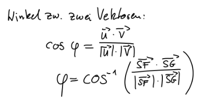

Winkel zwischen zwei Vektoren bestimmen

Über dem Bruchstrich, das
Skalarprodukt
berechnen.
Ergebnis durch das Produkt der beiden Längen, der beiden Vektoren teilen.
Ergebnis davon in
cos
-1
einsetzen.